本手册按当前 App 实际功能编写；未实现或未取证的能力统一列在文末「已知限制」，正文不写成功能。
| 步 | 做什么 | 预期 | 图 |
|---|---|---|---|
| 1 | 打开 App，等地图加载 | 全屏地图 + 左列 8 个工具 + 右列 10 个控件 | 见 fig-01 |
| 2 | 双指缩放、单指拖动 | 地图跟随手指；拖动方向与手指同向 | fig-02-drag.png |
| 3 | 点左列「罗盘」 | 罗盘浮层打开，盘面随朝向转动 | 见 fig-03 |
图 fig-01：主界面 · 冷启等首帧 · 全屏地图 + 左列 8 + 右列 10
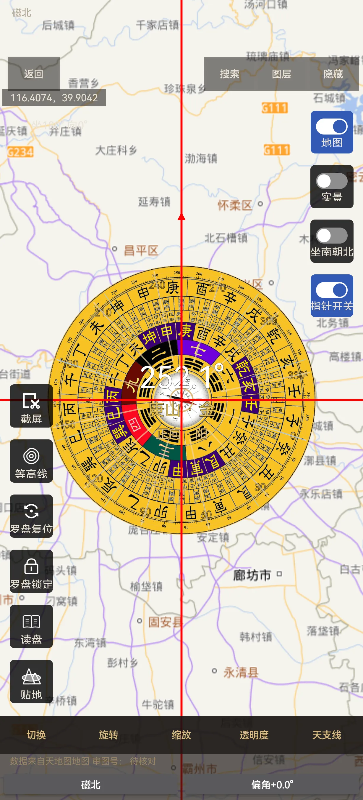
图 fig-03：左列「罗盘」 · 点入 · 罗盘浮层与左列 6 项
+ / −。map.html 无 dblclick/lastTap/tapTimer，Java 侧无 GestureDetector/onDoubleTap（审核验 2026-11-08 代码与实测双证）。双击 = 两次单点落点，没有缩放语义。已验收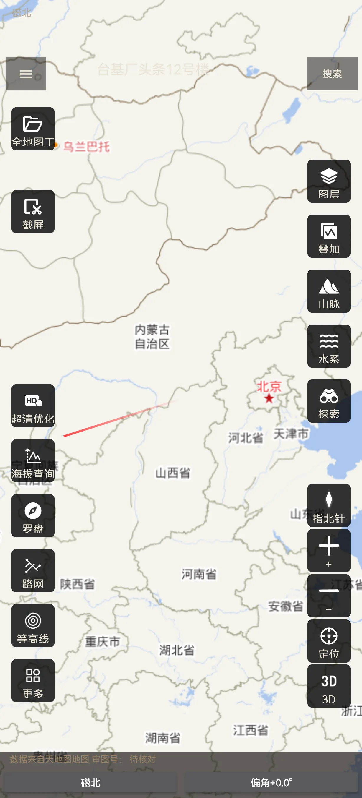
图 fig-02：主界面 · 单指按住向右拖 · 地图内容随手指同向
已验收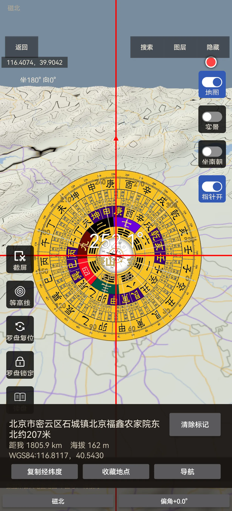
图 fig-05：罗盘态 · 点右列「地图」 · 矢量底图、该钮选中
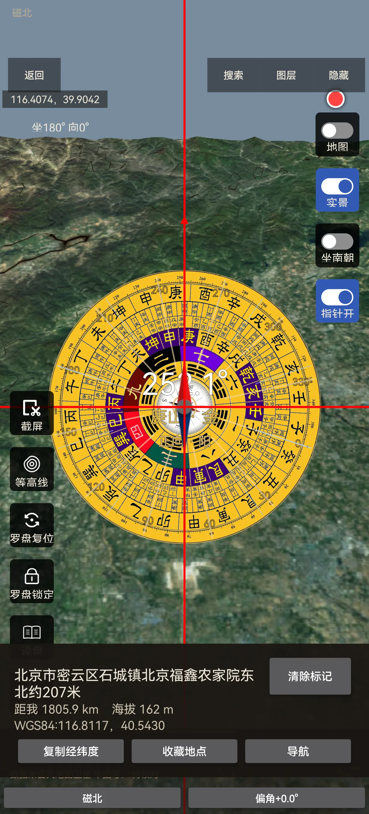
图 fig-06：罗盘态 · 点右列「实景」 · 影像底图、该钮选中
（两张图同视角，便于对照）
待核对图 fig-07：主界面底部 · 无需操作 · 数据来源角注区
已验收已验收已验收地盘正针二十四山、穿山七十二龙、百二十分金、透地平分六十龙、人盘中针、天盘缝针 六项，点该行任意位置或右侧「点击查看 ›」都会就地展开当前圈层的「向：… 坐：…」；数值由本机按朝向计算，不联网、不看账号。 状态：已验收（a7a1063 真机实测：点行体 → 「向：子山 坐：午山」、点蓝字 → 「向：戊子 坐：甲午」，截图 proof-rowtap-expanded.png／proof-bluetext-expanded.png）已验收有意差异+/−、罗盘工具条「缩放」。双击没有缩放语义（两次单点 = 落两个标记）。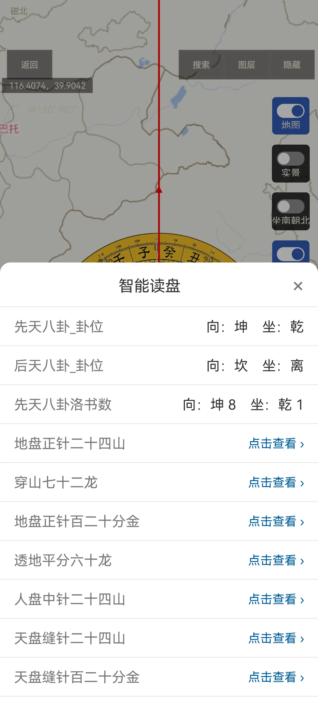
图 fig-08：罗盘态 · 智能读盘弹层（未展开态）· 顶部直显向/坐；点行任意位置即就地展开（展开后形态见正文说明）

图 fig-32：罗盘态 · 智能读盘弹层 · 点该行任意位置就地展开「向：… 坐：…」（以删门槛标记 + 整行可点之后的构建为准）
内置盘面(5) 与 已导入(0)。内置 5 项为 二十四山(阴)、常用罗盘(当前)、三合罗盘(白)、三元罗盘(金)、综合罗盘(白)；已导入 为空时显示「暂无导入盘面」。 状态：已验收待核对（导入流程未复验）已验收已验收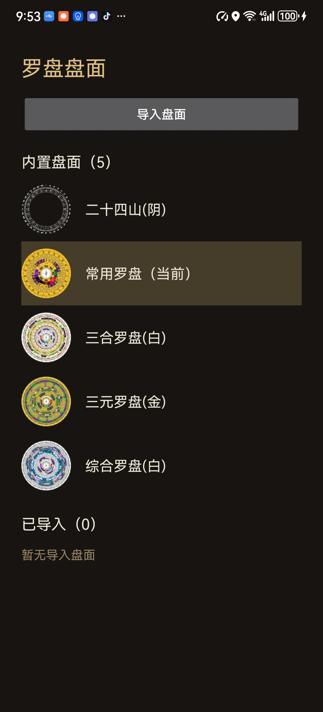
图 fig-09：罗盘态 · 打开盘面列表 · 四组：自定义/常用/简易/综合
切换 / 旋转 / 缩放 / 透明度 / 天支线。 状态：已验收（天支线：开关状态持久化）
图 fig-10：罗盘态底部 · 无需操作 · 切换/旋转/缩放/透明度/天支线
左列六项：截屏 / 等高线 / 罗盘复位 / 罗盘锁定 / 读盘 / 贴地（其中「贴地」入口在、效果未实现，见 §13）
| 项 | 做什么 | 状态 |
|---|---|---|
| 截屏 | 保存当前罗盘与地图画面 | 已验收 |
| 等高线 | 显隐等高线 | 已验收 |
| 罗盘复位 | 把偏转的地图立即回正北（不是切换显隐），清锁定/跟随、3D 下退 2D，不动缩放与中心 | 已验收 |
| 罗盘锁定 | 锁定当前盘面朝向 | 已验收 |
| 读盘 | 读出当前盘面信息 | 待核对 |
| 贴地 | 入口存在、名称为「贴地」，但效果未实现（见 §13） | 未实现 |
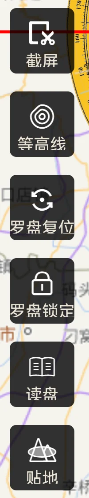
图 fig-11：罗盘态左列 · 无需操作 · 截屏/等高线/复位/锁定/读盘/贴地
地图 / 实景 / 坐南朝北 / 指针开关
| 项 | 做什么 | 状态 |
|---|---|---|
| 地图 / 实景 | 底图与罗盘态互斥切换 | 已验收 |
| 坐南朝北 | 盘面朝向取向切换 | 已验收 |
| 指针开关 | 纯地图态下指针图隐藏；罗盘态/实景态由开关显示或隐藏 | 已验收 |
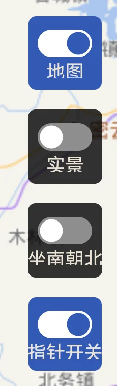
图 fig-12：罗盘态右列 · 无需操作 · 地图/实景/坐南朝北/指针开关
未实现（见 §13）全地图工具 / 截屏 / 超清优化 / 海拔查询 / 罗盘 / 路网 / 等高线 / 更多
| 工具 | 怎么用 | 状态 |
|---|---|---|
| 全地图工具 | 打开工具管理页（16 宫格 + 编辑/勾选/排序），无付费门槛 | 已验收 |
| 截屏 | 保存当前地图画面，有保存提示 | 已验收 |
| 超清优化 | 打开说明面板，当前为本地降级（最大 z18），无「会员/升级」字样 | 已验收 |
| 海拔查询 | 地图点选 → 结果面板（含海拔） | 已验收 |
| 罗盘 | 打开罗盘浮层（见 §3） | 已验收 |
| 路网 | 显隐路网图层 | 已验收 |
| 等高线 | 显隐等高线 | 已验收 |
| 更多 | 打开 16 格功能面板（见 §6） | 已验收 |
图 fig-14：主界面左列 · 无需操作 · 8 项全貌
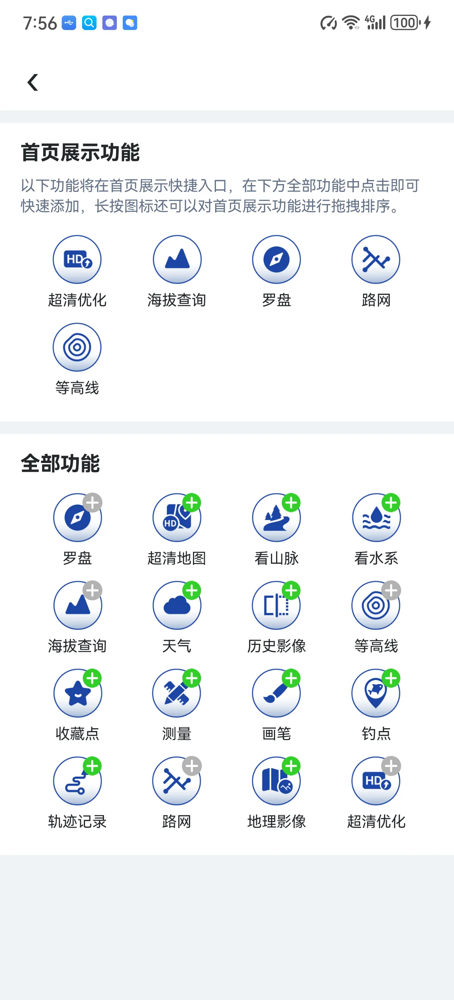
图 fig-15：左列「全地图工具」 · 点入 · 16 宫格 + 编辑/排序
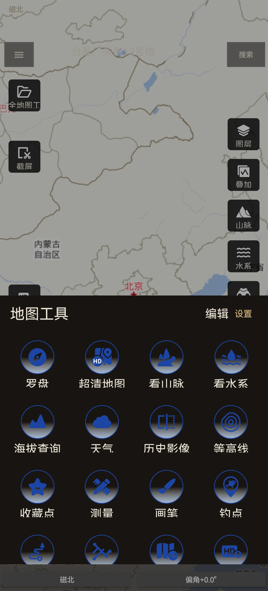
图 fig-16：左列「更多」 · 点入 · 16 格面板全貌
配图见 §4 fig-16（同一张，不重复贴图）
图层 / 叠加 / 山脉 / 水系 / 探索 / 指北针 / + / − / 定位 / 3D
| 控件 | 怎么用 | 状态 |
|---|---|---|
| 图层 | 底图与图层选择面板；无可用项时给明确占位，不写「去开通」 | 已验收 |
| 叠加 | 叠加层选择；无免费源时占位说明 | 已验收 |
| 山脉 | 打开山脉页 | 已验收 |
| 水系 | 打开水系页 | 已验收 |
| 探索 | 打开专题页 | 已验收 |
| 指北针 | 把偏转的地图立即回正北（= 罗盘复位同一语义） | 已验收 |
| + / − | 缩放 | 已验收 |
| 定位 | 回到当前位置 | 已验收 |
| 3D | 切换 3D 地形；我方无门槛、点击即切换（原版有 VIP 门槛，属有意差异，见 §13） | 已验收 |
3D 的已知行为：页面重载后保持 3D；杀进程冷启回 2D（与原版一致）。切换无过渡动画。 状态：已验收
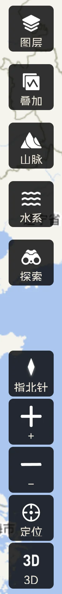
图 fig-17：主界面右列 · 无需操作 · 10 项全貌
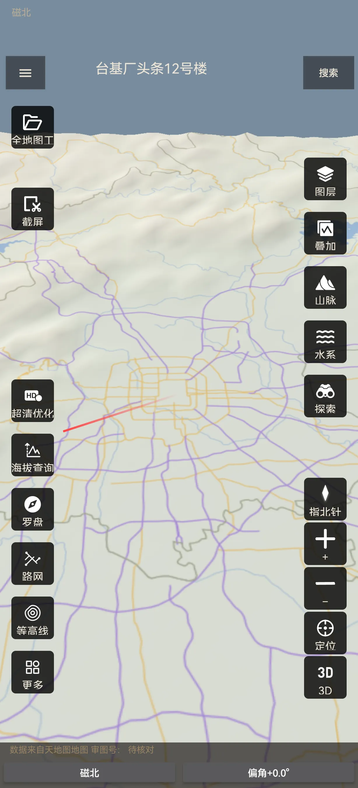
图 fig-18：右列「3D」 · 点入并等贴面完成 · 3D 地形
罗盘 / 超清地图 / 看山脉 / 看水系 / 海拔查询 / 天气 / 历史影像 / 等高线 / 收藏点 / 测量 / 画笔 / 钓点 / 轨迹记录 / 路网 / 地理影像 / 超清优化
已验收（入口）配图见 §4 fig-16（同一张，不重复贴图）
| 动作 | 怎么做 | 状态 |
|---|---|---|
| 收藏当前点 | 地图长按/「收藏点」→ 保存页，坐标自动预填 | 已验收 |
| 查看列表 | 「更多」→「收藏点」 | 已验收 |
| 点条目跳图 | 点行 → 地图定位到该点 | 已验收 |
| 删除 | 长按条目删除（我方入口形态，原版为「编辑」按钮，见 §13） | 已验收 |
| 云同步 | 登录后与自建服务端同步；未登录时先入本地队列，登录后补同步 | 已验收 |
图 fig-19：更多「收藏点」 · 收藏当前点 · 保存页坐标已预填
图 fig-20：更多「收藏点」 · 进入列表 · 至少两条
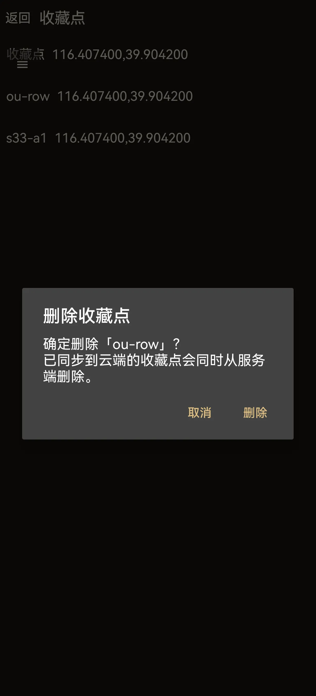
图 fig-21：收藏列表 · 长按条目 · 删除确认（我方形态）
| 功能 | 怎么做 | 状态 |
|---|---|---|
| 测量 | 地图上点选 → 结果面板；单位可切换（km² / 亩 / 公顷，17.80 km² ≈ 26705.6 亩 ≈ 1780.38 公顷） | 已验收 |
| 画笔 | 五色 + 粗细；偏好记忆（退出重进保留） | 已验收 |
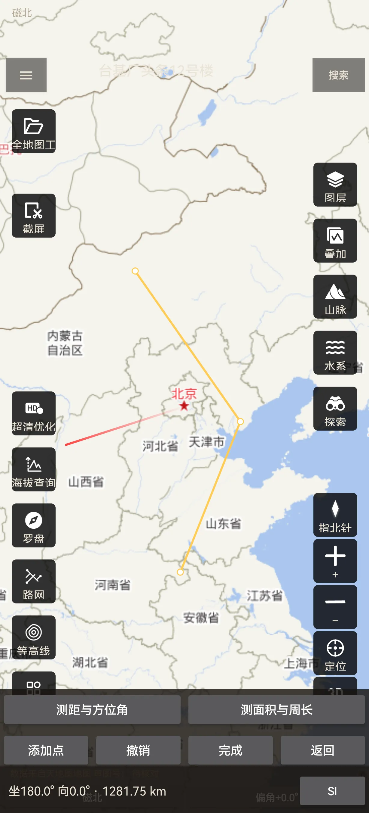
图 fig-22：更多「测量」 · 点选两点或区域 · 结果面板与单位
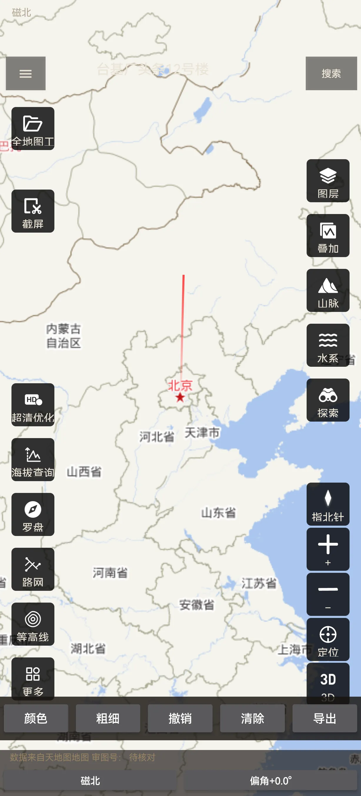
图 fig-23：更多「画笔」 · 打开面板 · 五色与粗细
待核对（入口在；功能状态以复验为准，未复核前不写成已完成）图 fig-24：更多「轨迹记录」 · 进入 · 轨迹列表
| 动作 | 怎么做 | 状态 |
|---|---|---|
| 注册 / 登录 | 账号 + 密码（本项目自建服务端） | 已验收 |
| 修改密码 | 账户设置内改密，旧会话失效 | 已验收 |
| 同步收藏点 | 账户设置内手动触发 | 已验收 |
| 登出 | 账户设置底部红按钮「退出登录」 | 已验收 |
| 账户设置 | 抽屉入口 | 已验收 |
（登录页图已按「缺图删条」删除：LoginActivity 不可外部直达，采集需先登出且无凭据可复登，不为一张图牺牲已测会话。）
图 fig-26：抽屉「账户设置」 · 进入 · 行列表 + 贴底红按钮
已验收图 fig-27：抽屉「投诉反馈」 · 进入一级页 · 两行 + 右上「我的」
图 fig-28：投诉反馈 · 点「问题反馈」 · 空表单
| 页 | 形态 | 状态 |
|---|---|---|
| 关于我们 | 整页（Logo、名称、公司、版本、测绘资质、备案编号） | 已验收 |
| 联系我们 | 弹窗（叠在抽屉上，关闭回抽屉），显示邮箱 + 「复制邮箱」 | 已验收 |
| 帮助中心 | 标题栏 + 内嵌网页（本文件即其内容来源） | 待核对（入口完成度以复验为准） |
图 fig-29：抽屉「关于我们」 · 进入 · Logo/名称/公司/版本/资质/备案号
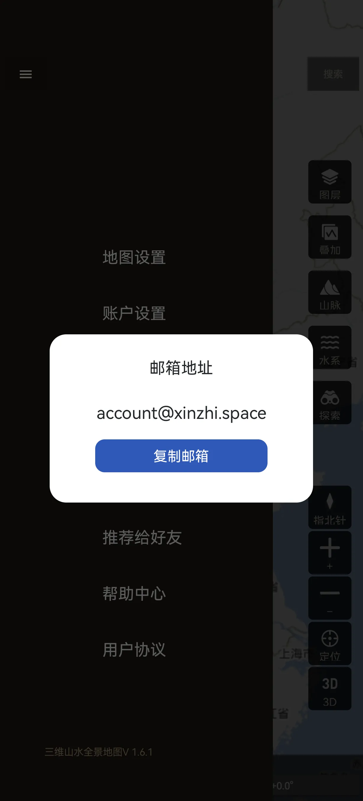
图 fig-30：抽屉「联系我们」 · 点开 · 弹窗叠在抽屉上
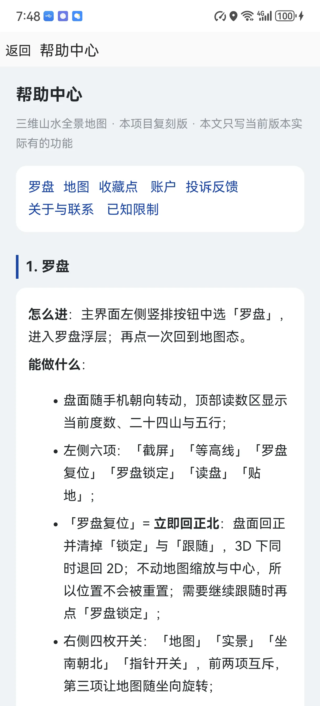
图 fig-31：抽屉「帮助中心」 · 进入 · 标题栏 + 网页正文
| # | 项 | 现状 | 说明 |
|---|---|---|---|
| 1 | 地图「当前位置符号」「屏幕中心符号」 | 未取证 / 未实现 | 原版 web 层资源零命中，无法取证，不自画 |
| 2 | 罗盘「贴地」效果 | 未实现 | 按钮在、名称对；3D 贴地渲染未落地 |
| 3 | 3D 的 VIP 门槛 | 有意差异 | 原版非 VIP 且免费次数用尽会跳 VIP 页；我方无门槛、恒可用 |
| 4 | 头像上传/编辑 | 未实现 | 依赖原版上传接口（updateAvatar key），未取证；昵称可在账户设置内修改（行尾「点此修改」），不属于本限制——此处措辞已按实现更正（审成文 a2a8235 M1） |
| 5 | 注销账户 | 未实现 | 自用非商用可接受；商用前必须补（合规要求） |
| 6 | 协议页（《用户协议》《隐私政策》） | 原版不可见 | 原版两链接 [0,0][0,0]、滑屏后仍为零尺寸；我方同样不提供入口 |
| 7 | 帮助中心离线可读 | 我方改进项 | 原版「离线」证据是抓取失败产物，已作废；离线能力按我方实现写，不算 1:1 |
| 8 | 收藏点删除入口形态 | 我方形态 | 原版是「编辑」按钮，我方是长按删除；功能等价、形态不同 |
| 9 | 审图号角注 | 待核对 | 本项目数据源与审图号另核，文档不写真值 |
| 10 | 智能读盘的付费门槛标记 | 已处置（DI） | 原版此处为 VIP 门槛，我方无 VIP 体系，故不设门槛（DI，不判 1:1 差异）。六项明细本来就有（CompassReadSheet 本地算「向/坐」，不联网、不看账号）⇒ 删该标记、保留「点击查看 ›」就地展开；客户端删钻石的代码笔待落，文档按目标态写 |
| 11 | 罗盘校准/精度提示 | 未实现 | 罗盘态左列 6 / 右列 4 / 工具条 5 里都没有校准与精度入口（审核验 2026-11-08 全项核过）⇒ 文档不写校准步骤，图已按缺图删条处理 |
| 12 | 双击缩放 | 未实现 | map.html 无 dblclick/lastTap/tapTimer，Java 无 GestureDetector/onDoubleTap（审核验 2026-11-08 代码+实测双证）⇒ 本版没有双击缩放，双击只是两次单点落点。现有缩放途径：双指捏合 / 右列 +·− / 罗盘工具条「缩放」 |